The original, as published: Tony R. Kuphaldt, Lessons In Industrial Instrumentation, Hydrostatic level measurement. CC BY 4.0, https://creativecommons.org/licenses/by/4.0/. Imported as published, from https://www.ibiblio.org/kuphaldt/socratic/sinst/book/liii.pdf https://www.ibiblio.org/kuphaldt/socratic/sinst/book/liii.pdf
A vertical column of fluid exerts a pressure due to the column’s weight. The relationship between column height and fluid pressure at the bottom of the column is constant for any particular fluid (density) regardless of vessel width or shape. This principle makes it possible to infer the height of liquid in a vessel by measuring the pressure generated at the bottom:
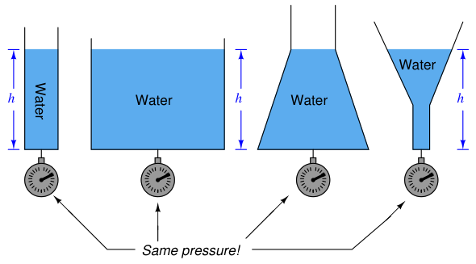
The mathematical relationship between liquid column height and pressure is as follows:
P = ρgh
P = γh
Where, P = Hydrostatic pressure ρ = Mass density of fluid in kilograms per cubic meter (metric) or slugs per cubic foot (British) g = Acceleration of gravity γ = Weight density of fluid in newtons per cubic meter (metric) or pounds per cubic foot (British) h = Height of vertical fluid column above point of pressure measurement
For example, the pressure generated by a column of oil 12 feet high (h) having a weight density of 40 pounds per cubic foot (γ) is:
P = γh
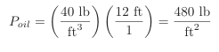
Note the cancellation of units, resulting in a pressure value of 480 pounds per square foot (PSF). To convert into the more common pressure unit of pounds per square inch, we may multiply by the proportion of square feet to square inches, eliminating the unit of square feet by cancellation and leaving square inches in the denominator:
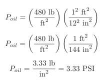
Thus, a pressure gauge attached to the bottom of the vessel holding a 12 foot column of this oil would register 3.33 PSI. It is possible to customize the scale on the gauge to read directly in feet of oil (height) instead of PSI, for convenience of the operator who must periodically read the gauge. Since the mathematical relationship between oil height and pressure is both linear and direct, the gauge’s indication will always be proportional to height.
An alternative method for calculating pressure generated by a liquid column is to relate it to the pressure generated by an equivalent column of water, resulting in a pressure expressed in units of water column (e.g. inches W.C.) which may then be converted into PSI or any other unit desired. For our hypothetical 12-foot column of oil, we would begin this way by calculating the specific gravity (i.e. how dense the oil is compared to water). With a stated weight density of 40 pounds per cubic foot, the specific gravity calculation looks like this:
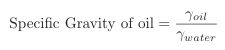
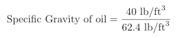
Specific Gravity of oil = 0.641
The hydrostatic pressure generated by a column of water 12 feet high, of course, would be 144 inches of water column (144 ”W.C.). Since we are dealing with an oil having a specific gravity of 0.641 instead of water, the pressure generated by the 12 foot column of oil will be only 0.641 times (64.1%) that of a 12 foot column of water, or:
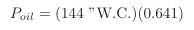
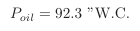
We may convert this pressure value into units of PSI simply by dividing by 27.68, since we know 27.68 inches of water column is equivalent to 1 PSI:
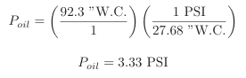
As you can see, we arrive at the same result as when we applied the P = γh formula. Any difference in value between the two methods is due to imprecision of the conversion factors used (e.g. 27.68 ”W.C., 62.4 lb/ft3 density for water).
Any type of pressure-sensing instrument may be used as a liquid level transmitter by means of this principle. In the following photograph, you see a Rosemount model 1151 pressure transmitter being used to measure the height of colored water inside a clear plastic tube:
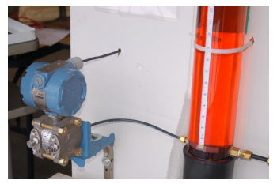
In most level-measurement applications, we are concerned with knowing the volume of the liquid contained within a vessel, and we infer this volume by using instruments to sense the height of the fluid column. So long as the vessel’s cross-sectional area is constant throughout its height, liquid height will be directly proportional to stored liquid volume. Pressure measured at the bottom of a vessel can give us a proportional indication of liquid height if and only if the density of that liquid is known and constant. This means liquid density is a critically important factor for volumetric measurement when using hydrostatic pressure-sensing instruments. If liquid density is subject to random change, the accuracy of any hydrostatic pressure-based level or volume instrument will be correspondingly unreliable. It should be noted, though, that changes in liquid density will have absolutely no effect on hydrostatic measurement of liquid mass, so long as the vessel has a constant cross-sectional area throughout its entire height. A simple thought experiment proves this: imagine a vessel partially full of liquid, with a pressure transmitter attached to the bottom to measure hydrostatic pressure. Now imagine the temperature of that liquid increasing, such that its volume expands and has a lower density than before. Assuming no addition or loss of liquid to or from the vessel, any increase in liquid level will be strictly due to volume expansion (density decrease). Liquid level inside this vessel will rise, but the transmitter will sense the exact same hydrostatic pressure as before, since the rise in level is precisely countered by the decrease in density (if h increases by the same factor that γ decreases, then P = γh must remain the same!). In other words, hydrostatic pressure is seen to be directly proportional to the amount of liquid mass contained within the vessel, regardless of changes in liquid density. This is useful to know in applications where true mass measurement of a liquid (rather than volume measurement) is either preferable or necessary3.
Differential pressure transmitters are the most common pressure-sensing device used in this capacity to infer liquid level within a vessel. In the hypothetical case of the oil vessel just considered, the transmitter would connect to the vessel in this manner (with the high side toward the process and the low side vented to atmosphere):
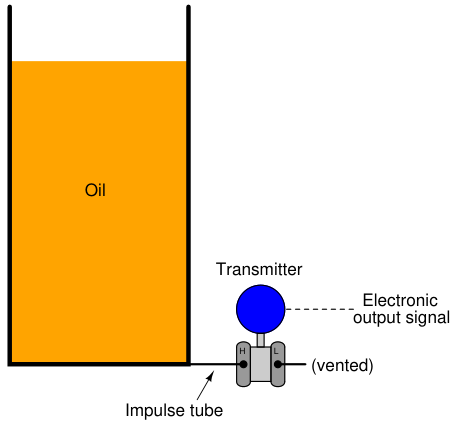
Connected as such, the differential pressure transmitter functions as a gauge pressure transmitter, responding to hydrostatic pressure exceeding ambient (atmospheric) pressure. As liquid level increases, the hydrostatic pressure applied to the “high” side of the differential pressure transmitter also increases, driving the transmitter’s output signal higher.
3We may prove this mathematically by algebraic substitution. Given that the total mass (m) of any liquid sample is equal to the product of that liquid’s mass density and its sample volume (m = ρV ), that volume (V ) for any vessel of constant cross-sectional area (A) is given by the expression V = Ah, and that hydrostatic pressure is equal to P = ρgh, we may combine these three equations to arrive at m = AP
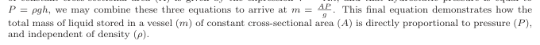
Some pressure-sensing instruments are built specifically for hydrostatic measurement of liquid level in vessels, eliminating with impulse tubing altogether in favor of a special kind of sealing diaphragm extending slightly into the vessel through a flanged pipe entry (commonly called a nozzle). A Rosemount hydrostatic level transmitter with an extended diaphragm is shown here:
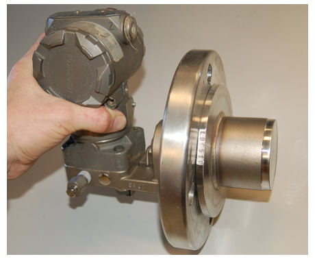
The calibration table for a transmitter close-coupled to the bottom of an oil storage tank would be as follows, assuming a zero to twelve foot measurement range for oil height, an oil density of 40 pounds per cubic foot, and a 4-20 mA transmitter output signal range:
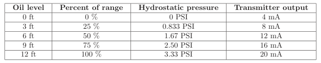